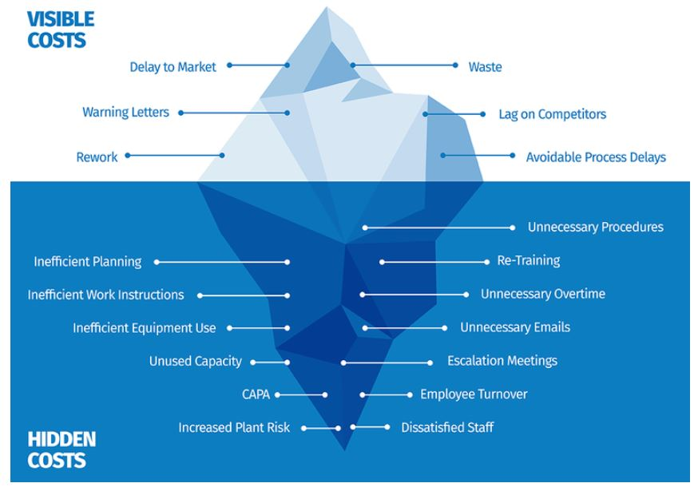

Quality Concepts and Tools-1
5S Methodology
5S in the workplace represents five simple practices
that begin with the letter ‘S’ which are:
- Sort – Seiri
- Setting in order – Seiton
- Shine – Seiso
- Standardize – Seiketsu
- Sustain- Shitsuke

The Continuous Process improvement Model
Among the most widely used tools for the continuous improvement model is a four-step quality assurance method—the Plan-do-check-act (PDCA) cycle:Plan: Identify an opportunity and plan for change.
Do: Implement the change on a small scale.
Check: Use data to analyze the results of the change and determine whether it made a difference.
Act: If the change was successful, implement it on a wider scale and continuously assess your results.
If the change did not work, begin the cycle again. Other widely used methods of continuous improvement, such as Six Sigma, lean, and total quality management, emphasize employee involvement and teamwork, work to measure and systematize processes, and reduce variation, defects, and cycle times.
Continual Or continuous improvement
The terms continuous improvement and continual improvement are frequently used interchangeably, but the main difference between the terms is time: Common Dictionary Definitions of Continual and Continuous Common definitions of continual improvement and continuous improvement But some quality practitioners make the following distinction: Continual improvement: A broader term preferred by W. Edwards Deming to refer to general processes of improvement and encompassing "discontinuous" improvements—that is, many different approaches, covering different areas. Continuous improvement: A subset of continual improvement, with a more specific focus on linear, incremental improvement within an existing process. Some practitioners also associate continuous improvement more closely with techniques of statistical process control.Cost Of Quality (COQ)
Quality Glossary Definition: Cost of quality Cost of quality (COQ) is defined as a methodology that allows an organization to determine the extent to which its resources are used for activities that prevent poor quality, that appraise the quality of the organization’s products or services, and that result from internal and external failures. Having such information allows an organization to determine the potential savings to be gained by implementing process improvements.- Cost of poor quality (COPQ)
- Appraisal costs
- Internal failure costs
- External failure costs
- Prevention costs
- COQ and organizational objectives
- COQ resources
What is Cost Of Poor Quality (COPQ)?
Cost of poor quality (COPQ) is defined as the costs associated with providing poor quality products or services. There are three categories:- Appraisal costs are costs incurred to determine the degree of conformance to quality requirements.
- Internal failure costs are costs associated with defects found before the customer receives the product or service.
- External failure costs are costs associated with defects found after the customer receives the product or service.
- Quality-related activities that incur costs may be divided into prevention costs, appraisal costs, and internal and external failure costs.
Appraisal costs
Appraisal costs are associated with measuring and monitoring activities related to quality. These costs are associated with the suppliers’ and customers’ evaluation of purchased materials, processes, products, and services to ensure that they conform to specifications. They could include:- Verification: Checking of incoming material, process setup, and products against agreed specifications
- Quality audits: Confirmation that the quality system is functioning correctly
- Supplier rating: Assessment and approval of suppliers of products and services
Internal failure costs
Internal failure costs are incurred to remedy defects discovered before the product or service is delivered to the customer. These costs occur when the results of work fail to reach design quality standards and are detected before they are transferred to the customer. They could include:- Waste: Performance of unnecessary work or holding of stock as a result of errors, poor organization, or communication
- Scrap: Defective product or material that cannot be repaired, used, or sold
- Rework or rectification: Correction of defective material or errors
- Failure analysis: Activity required to establish the causes of internal product or service failure
External failure costs
External failure costs are incurred to remedy defects discovered by customers. These costs occur when products or services that fail to reach design quality standards are not detected until after transfer to the customer. They could include:- Repairs and servicing: Of both returned products and those in the field
- Warranty claims: Failed products that are replaced or services that are re-performed under a guarantee
- Complaints: All work and costs associated with handling and servicing customers complaints
- Returns: Handling and investigation of rejected or recalled products, including transport costs
Prevention Costs
Prevention costs are incurred to prevent or avoid quality problems. These costs are associated with the design, implementation, and maintenance of the quality management system. They are planned and incurred before actual operation, and they could include:- Product or service requirements: Establishment of specifications for incoming materials, processes, finished products, and services
- Quality planning: Creation of plans for quality, reliability, operations, production, and inspection
- Quality assurance: Creation and maintenance of the quality system
- Training: Development, preparation, and maintenance of programs
Cost Of Quality & Organizational Objectives
The costs of doing a quality job, conducting quality improvements, and achieving goals
must be carefully managed so that the long-term effect of quality on the organization is
a desirable one.
These costs must be a true measure of the quality effort, and they are best determined from
an analysis of the costs of quality. Such an analysis provides a method of assessing the
effectiveness of the management of quality and a means of determining problem areas,
opportunities, savings, and action priorities.
Cost of quality is also an important communication tool. Philip Crosby demonstrated what a
powerful tool it could be to raise awareness of the importance of quality. He referred to the
measure as the "price of nonconformance" and argued that organizations choose to pay for poor quality.
Many organizations will have true quality-related costs as high as 15-20% of sales revenue,
some going as high as 40% of total operations. A general rule of thumb is that costs of poor
quality in a thriving company will be about 10-15% of operations. Effective quality improvement
programs can reduce this substantially, thus making a direct contribution to profits.
The quality cost system, once established, should become dynamic and have a positive impact on the
achievement of the organization’s mission, goals, and objectives.
Chart displays the total cost of quality, which consists of costs of poor quality,
such as internal failure and external failure costs, as well as costs of good quality,
such as appraisal costs and prevention costs.

